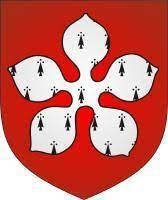

Greve av Meulan & Leicester. Blev ca 72 år.

omkring 1046 Pont-Audemer, Beaumont, Normandy, Frankrike. [1]
1118-06-05 Leicester, Leicestershire, England. [1]
Biografi
Seigneur (Lord) av Beaumont, Pont-Audemer, Brionne och Vatteville. [1] Dessa var kritiskt viktiga slott i Normandie. [2] Från 1081 var han även Comte (greve) av Meulan, vilket är ett arv genom hans mor. [1]
I England blev han den första anglo-normanske jarlen av Leicester (utan att räkna några jarlar före 1066). Hans mycket betydelsefulla engelska länder var centrerade där och i angränsande Warwickshire. [1]
Han var i slaget vid Hastings. Keats-Rohan, förklarar den ursprungliga medeltida källan: [3] "Enligt William av Poitiers var hans första engagemang som riddare på fältet Hastings, där han presterade enastående bra."
Födelse: Han föddes omkring 1046. [1] [4]
Död och begravning: [2]
"Den 5 juni 1118 dog greve Robert I av Meulan i ett av hans engelska bostäder. Hans slut var inte lyckligt: livet vid kung Henriks hov tenderade att belasta dess fångars samvete."
"Grevens lik bars tillbaka till Normandie och begravdes i kapitelhuset i hans familjs stiftelse St Peter av Préaux, nära hans far, Roger de Beaumont, och hans farbror, Robert fitz Humphrey."
Familj
Han gifte sig 1096 med Isabel (även kallad Elizabeth) de Vermandois, dotter till Hugh de Crépi (kallad "den store"), greve av Vermandois. Orderic Vitalis skrev att detta var hans andra fru, men Complete Peerage tror att hans redogörelse sannolikt inte är korrekt, eftersom den namngivna damen, Godechilde dotter till Ralph de Toeni, gifte sig när Robert var fortfarande, och fortfarande var ganska ung vid detta äktenskap. [1]
Utgåvan av Robert de Meulent av Isabel var en dotter som hette Emma, född, enligt Orderic, 1102; två söner (tvillingar), döpta Waleran och Robert, född 1104; en tredje son, känd som Hugh the Poor, därefter Earl of Bedford, och tre andra döttrar, Adeline, Amicia och Albreda, vilka alla måste ha fötts efter 1104, då deras far, då Earl of Leicester, var hårt drabbad i år. Orderic säger faktiskt att han hade fem döttrar, den femte heter Isabel, efter hennes mor. [Vilken gammal källa var detta kopierat från?]
Emma de Beaumont (f.1102)
Waleran IV de Beaumont, greve av Meulan, 1:e earl av Worcester (f. 1104), äldste tvilling och arvinge.
Robert de Beaumont, 2:e earl av Leicester & Earl of Hereford (f. 1104), tvilling
Hugh de Beaumont, 1:e earl av Bedford (f. cirka 1106)
Adeline de Beaumont
m.1 Hugh IV av Montfort-sur-Risle
m.2 Richard de Granville från Bideford (d.1147)
Aubree/Alberada de Beaumont m. Hugh II av Châteauneuf-Thimerais.
Agnes de Beaumont (nunna)
Maud/Matilda de Beaumont m. William Lovel. (c.1102)
Isabel/Elizabeth de Beaumont
älskarinna till kung Henrik I.
m.1 Gilbert de Clare, 1:e earl av Pembroke
m.1 Hervé de Montmorency, konstapel i Irland